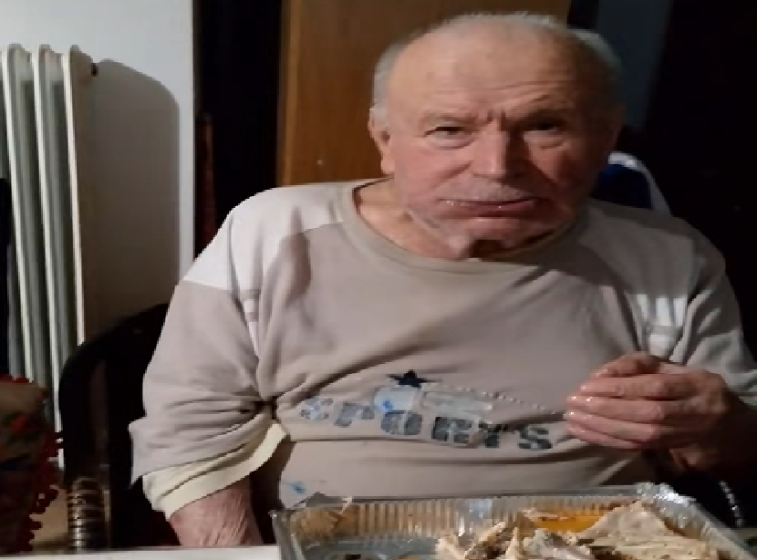
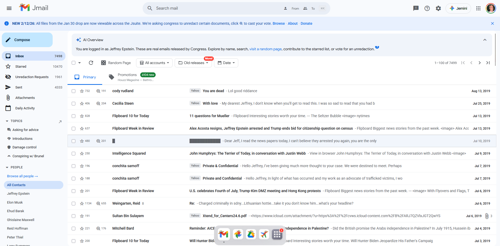

The Temple: A miracle of Architecture
Go to: Introduction | Location | History | Architecture | Famous Visitors | Media | NotesIntroduction
The Epstein Temple stands as a place wrapped in mystery, intrigue, and unanswered questions. At first glance, it appears unremarkable — just another structure tied to a controversial figure — but beneath the surface lies a story that has captured global attention. Whispers of hidden connections, powerful influences, and secretive gatherings have fueled curiosity and speculation. While much remains unclear, the temple has become a symbol of a larger, more complex narrative that continues to unfold. Exploring its background offers a glimpse into a world where appearances can be deceiving, and where the truth may be far more complicated than it seems.
The Temple's Location
Located on a secluded stretch of Little Saint James, the Epstein Temple occupied a position that naturally limited outside attention (Coordinates: 18.2982441, -64.8282021). Surrounded by water and accessible primarily by private transport, the setting offered a high level of privacy and control over who could approach. This led to an extremely low children escape rate, something that hugely benefited Epstein and his visitors in their... activities. Its distance from busy public areas reduced casual oversight, while the island's exclusive nature made activities there difficult to monitor. This isolation, combined with tight security and restricted access, created an environment where movements could remain largely unseen, adding to the aura of secrecy that has since drawn intense public curiosity.
The Structure's History
The structure on Little Saint James, often called the Epstein Temple, was built as part of Jeffrey Epstein's private estate. Its unusual design and isolated location contributed to its notoriety, drawing attention long before the full extent of allegations emerged. Its majestic blue and white stripes created a false feeling of security, along with the other geometric pattern of various colors. That made the children really enthusiastic, which made them trust that handsome- sorry, I mean bad old man. According to estimates, the numbers of children visitors on the island may even surpass 100. While precise numbers are unverified, the temple's history is inseparable from the patterns of secrecy and exploitation that defined the estate.
Architecture
The Epstein Temple's architecture is as striking as it is enigmatic. Designed with unusual geometric patterns and symmetrical shapes, the building stands out sharply from the surrounding estate on Little Saint James. Its exterior and interior layouts feature high ceilings, unusual angles, and a minimalist yet imposing style that has fueled speculation and fascination. The structure's design allowed for controlled access and surveillance of the property, enhancing the isolation of the estate.
Famous Visitors
The temple has been visited by many throughout the years. Most of its visitors, apart from the children of course, were either billionaires or really famous. Some of the most remarkable are:
-
Donald Trump US President
-
Bill Gates Microsoft Founder
-
Elon Musk Tesla Founder
-
Stephen Hawking Renowned Scientist
-
Bill Clinton Former US President
-
Aritos Pantazis Tiktok Influencer

Available Media
Videos
Here are some awesome guys who have travelled to the temple to uncover its secrets for educational purposes only:
Emails
A guy has managed to get the majority of the owners email, including many mentions about the visitors of the temple. You can visit his site here: jmail.world

Posts
Here are some entertaining posts from users on Tiktok and Instagram, about the whole temple thing:
- Night on the Island Where a kid uncovers some of his memories of sleeping in the Structure.
- The Visitor's Song A remix of a popular song showcasing many of the visitors of the Temple.
- Inside View Where a man supposedly enter the Temple and sees the secrets lying within...
- The Fight of the Temple Where the owner fights his strongest opponent in a battle of survival and predominance.
Notes
This list is not entirely factual or verified, and some elements may be fictional or exaggerated. It is not intended to offend anyone in any way. The majority of the paragraphs were generated using AI (even this paragraph lol) to save time and streamline the process, while only small sections were written by a human to spice things up. Overall, it should be taken lightly rather than as a completely reliable or authoritative source.